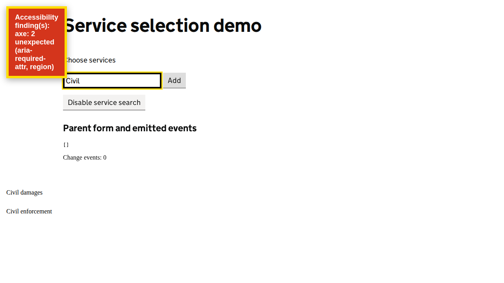

Automated heuristics support investigation; they do not replace screen-reader testing or establish WCAG conformance.
View page screenshot

Page summary snapshot captured after behavioral checks; engine evidence records the scanned state.
Behavioral checks
- No behavioral checks requested.
Engine summary
URL: http://localhost:4200/coverage/service-selection
Strict mode: on